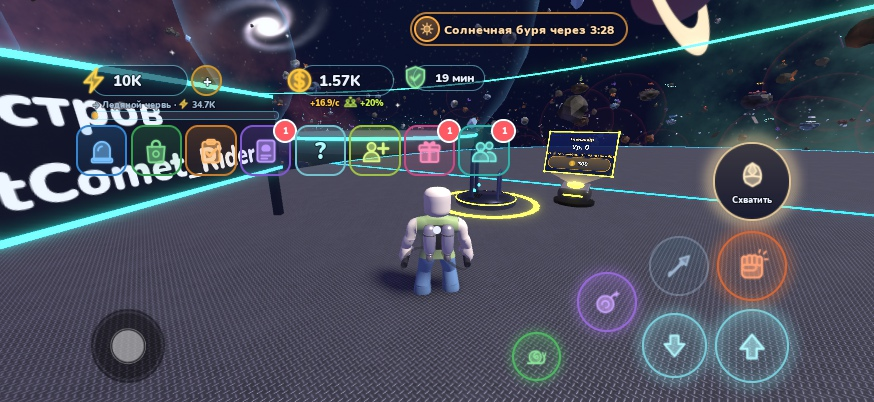
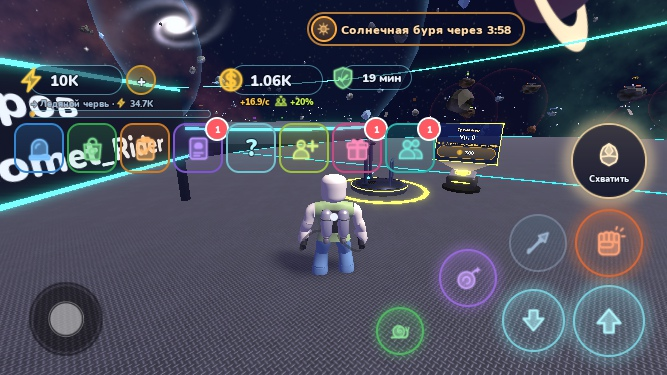
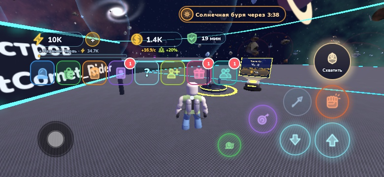
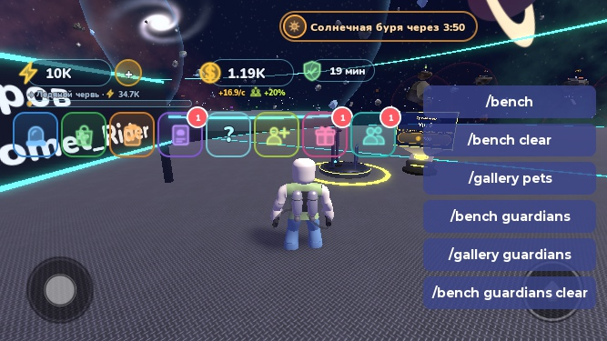
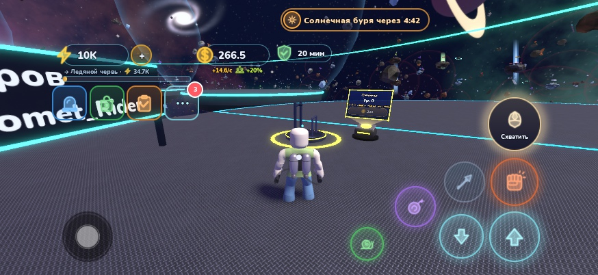
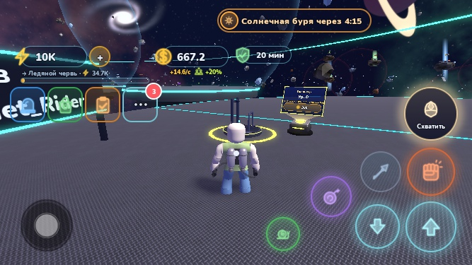
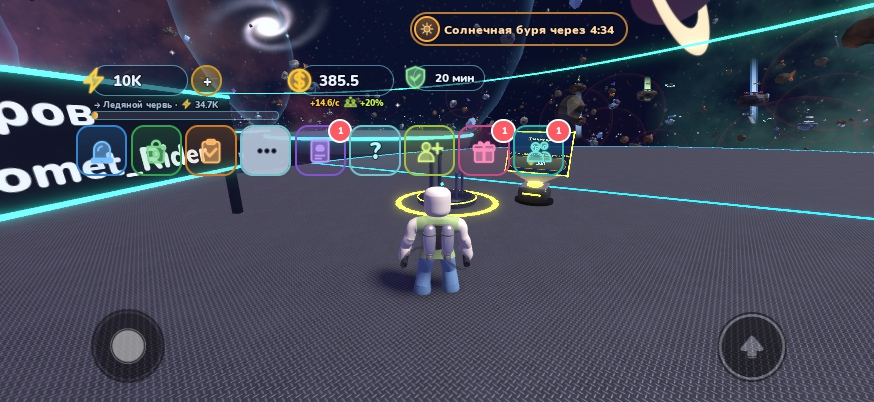
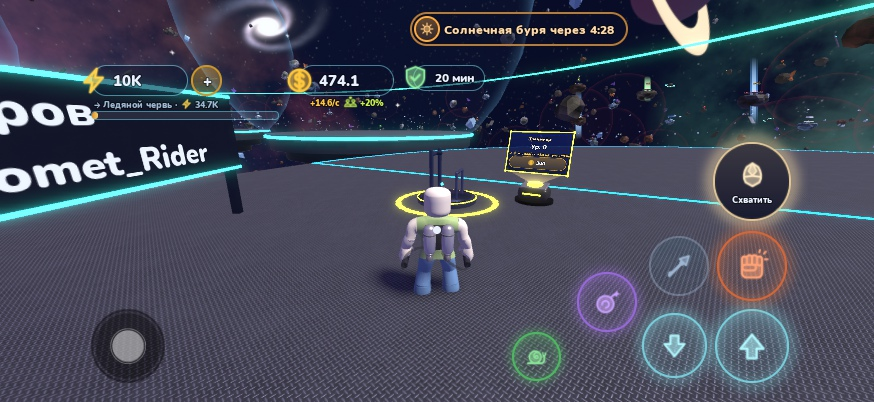
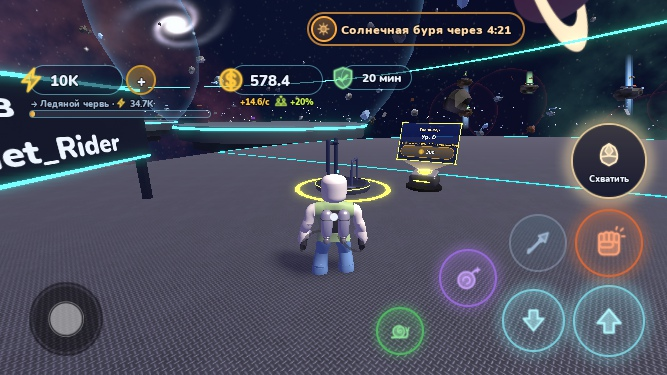

Снимки — Studio, эмулятор устройств, в настоящем разрешении телефона (точки). Ряд кнопок Roblox сверху на снимок не попадает. Варианты собраны прямо в игре: плитки спрятаны и добавлены из клиента, без кода. Бриф — docs/design/screens/hud-menu-fold.md.
Восемь плиток — 428 точек: 57 % ширины на iPhone 16 Pro, 64 % на iPhone 7. Ряд стоит на высоте горизонта.




В ряду — отсек, магазин, задания и «⋯»: 209 точек. «⋯» раскрывает остальные плитки в том же ряду; бейдж на «⋯» — сумма спрятанных. Ряд сворачивается после нажатия плитки, повторным «⋯» и в космосе.



На станции — все плитки, как сейчас. В космосе ряд пропадает целиком; остаются ⚡ с «+», монеты и защита.


На станции — как А (три плитки и «⋯»), в космосе — как Б (ряда нет). Полёт выглядит как Б, станция — как А.